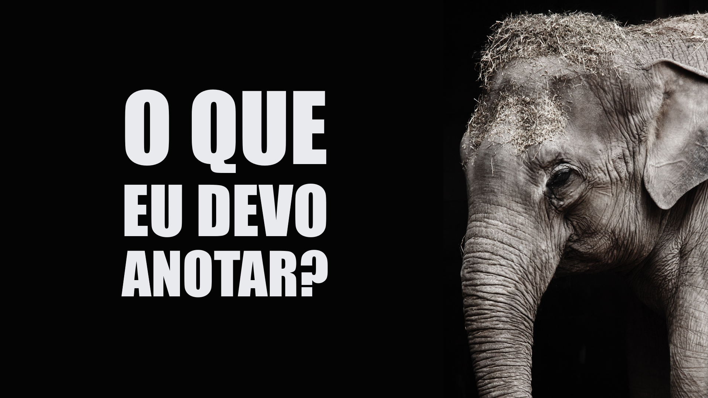

O que é esta página?
Esta página foi criada para te apoiar durante o nosso encontro.
Curta a viagem porque tudo o que for dito e mostrado já foi colocado por aqui para você poder consultar e ampliar depois.
Pasta com os arquivos de apoio
A seguir estão os PDFs de artigos, a apresentação usada no encontro e outros materiais para você guardar e retomar no futuro.
O Cisne Negro
Nicholas Taleb

Alguns eventos são mais ligados aos outros que os precedem. A quantidade de dinheiro que um trabalhador vai fazer durante um mês é uma dessas coisas - geralmente, se trabalhamos bastante, não é surpresa receber uma promoção. Também uma rotina de boa alimentação pode perfeitamente se desdobrar em boa saúde.
Outros eventos, como terremotos ou bolsa de valores, não são bem assim. Você não sabe quando vão acontecer e ainda que possa prever os acontecimentos, não é possível descrever exatamente seus desdobramentos.
Em seu livro The Black Swan (Cisne Negro), Nicholas Taleb revela os resultados de anos de pesquisa com seu olhar estatístico aguçado. Sua tese é a de que os fatos mais importantes e decisivos para toda a história conhecida da humanidade não foram resultados de uma sequência previsível de eventos, mas dos chamados Black Swan!
Sua hipótese é a de que o esforço para prever o futuro com base no que se conhece do presente é, na maioria das vezes, pouco eficaz.
Segundo Taleb, o processo de buscar padrões na natureza faz a gente pensar que ela é mais regular e previsível do que ela realmente é. O medo do futuro nos leva a fantasiar com previsões mirabolantes ou padrões forçados que não são reais.
Como resultado, o que deveria nos deixar mais seguros para enfrentar o futuro, acaba por nos deixar mais vulneráveis e dependentes da previsibilidade!
Não deixe o medo te tornar irracional.
Ver o livroCompartilhe
Se algum participante do encontro precisar acessar este site, compartilhe este QR Code.